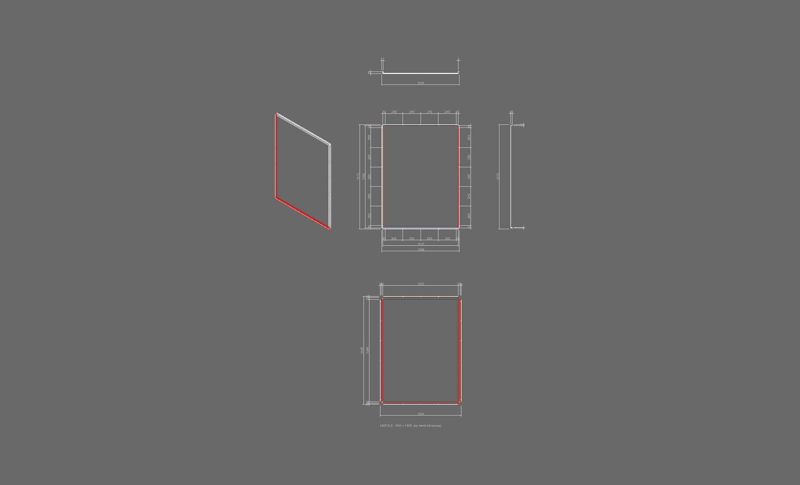
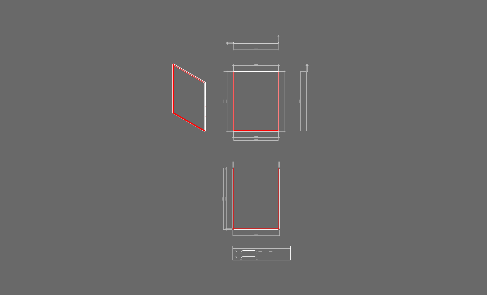
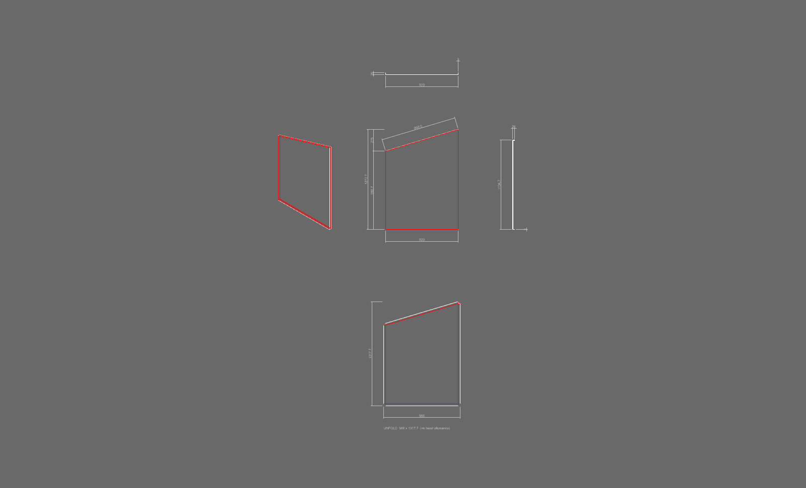
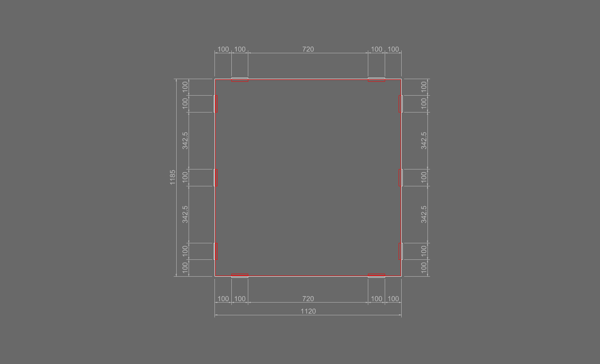
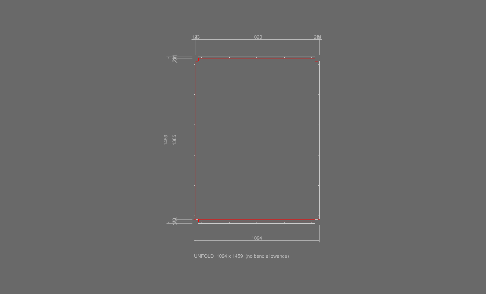
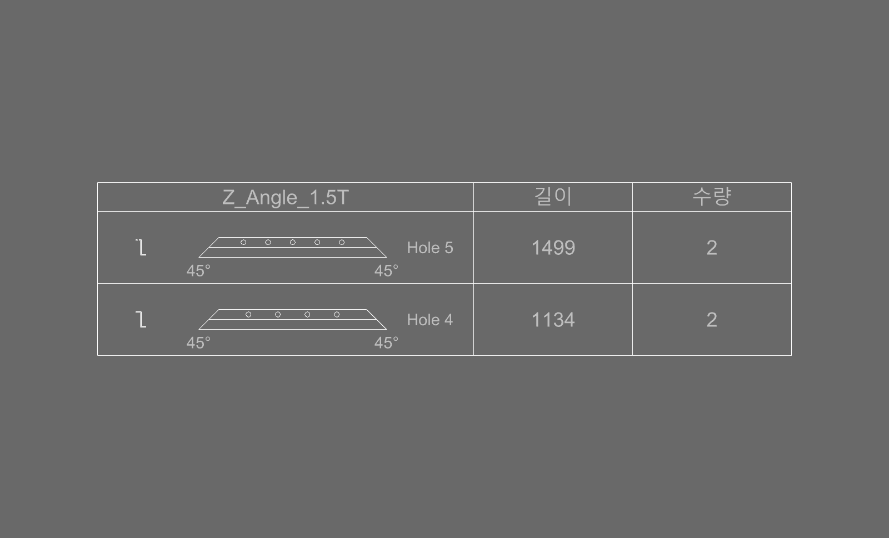

ShFd
ShTable 이 놓은 대표 판재마다 가공도를 그립니다. 정면도와 치수, 위 · 오른쪽 단면, ISO 그림, 전개도, 그리고 붙인 profile 표가 한 칸에 그려집니다.
판재의 제작 도면을 만들 때 사용합니다. 그림과 치수는 모델에서 직접 뽑으므로, 모델의 모양(코너 맞댐 · 구멍 · 기운 변)이 도면에 그대로 나옵니다.
S_Center1 선과 등록된 단면(SSP), 방향이 기록된 와이어프레임(WVector)을 바탕으로 동작합니다.Section_On · ISO_On · Unfold_On)으로 그릴 그림을 고릅니다.


| 그림 | 자리 | 내용 |
|---|---|---|
| 정면도 | 대표 판재 자리 | 판재를 앞에서 본 2D 선(보이는 선 + 숨은선). 3D 복사본은 그린 뒤 지워집니다. |
| 가로 단면 | 정면도 위 | 판의 중간 높이에서 자른 모양. 전체 길이 · 깊이 · 두께 · 되접는 길이 치수. |
| 세로 단면 | 정면도 오른쪽 | 판의 중간 폭에서 자른 모양. 같은 치수. |
| ISO | 정면도 왼쪽 | 숨은선을 포함한 입체 그림. |
| 전개도 | 정면도 아래 | 모델을 접는 선에서 펴 놓은 모양. 접는 선과 구멍이 표시되고 전체 크기가 UNFOLD 폭 x 높이 로 적힙니다. |
| profile 표 | 전개도 아래 | 붙인 profile 의 이름 · 가공 모양 · 길이 · 수량. profile 이 없으면 그리지 않습니다. |
정면도는 판넬의 크기를 보여 주는 것이 먼저이고, 붙인 profile 과 구멍의 치수가 보조로 들어갑니다. 줄의 차례는 판넬 쪽에서부터 다음과 같습니다.
| 줄 | 설명 |
|---|---|
| ① 막대 · 구멍 | 변마다 꼭짓점 · 막대(또는 구멍) · … · 꼭짓점을 잇는 연속 치수. 기운 변에서는 변을 따라 잽니다. |
| ② 판넬 꼭짓점 | 기운 판넬에서 변이 끝나는 꼭짓점의 자리. 직사각형이면 전체 치수와 같아 생략됩니다. |
| ③ 전체 | 판 면의 전체 폭과 높이. 바깥쪽 되접기는 날개까지 포함한 치수가 한 줄 더 나옵니다. |
| 기운 변 | 아무것도 붙지 않은 기운 변에는 그 변의 실제 길이가 나옵니다. |


| 항목 | 설명 |
|---|---|
| 펴는 방법 | 모델을 판 · 변마다의 접힌 날 · 되접힌 부분으로 나누어 접는 선에서 펴 놓습니다. 모델의 코너 모양과 구멍이 그대로 나옵니다. |
| 길이 | 벤딩 여유를 넣지 않습니다. 접힌 날 = 깊이 − 두께, 되접힌 부분 = 되접는 길이 − 두께. |
| 선의 종류 | 앞면 쪽 선은 실선, 뒷면 쪽 선과 접는 선은 숨은선 레이어. 두 선이 겹치면 보이는 선만 남습니다. |
| 치수 | 전체 폭 · 높이. 직사각 판재는 접힌 날 · 판 면의 연속 치수가 더 나옵니다. |
| 기운 판재 | 사다리꼴 · 평행사변형도 전개도가 그려집니다. |

| 항목 | 설명 |
|---|---|
| 표 | profile 이름마다 표 하나. 길이 · 끝 모양 · 구멍이 같은 막대끼리 한 줄. |
| 가공 모양 | 단면 모양과 막대 약도. 약도는 길이대로 그리지 않습니다 — 끝을 45°로 자르는지, 구멍이 있는지를 보여 줍니다. |
| 길이 | 막대의 가장 긴 쪽(mm). |
| 수량 | 그 판재 한 장에 붙는 개수. |
| 항목 | 설명 |
|---|---|
| 레이어 | 보이는 선 Sheet_Fab, 숨은선 · 접는 선 Sheet_Fab_Hidden, 치수 · 글자 Dims. |
| 글자 크기 | 현재 치수 스타일의 글자 크기를 따릅니다. |
| 다시 그리기 | 가공도를 그리면 표의 3D 복사본이 지워집니다. 다시 그리려면 ShTable 부터 다시 실행합니다. |
| 도면 평면 | 가공도는 Front 뷰에서 보는 도면 평면에 그려집니다. |
| 명령어 | 설명 |
|---|---|
| ShTable | 판재 가공도 표 — ShFd 를 실행하기 전에 표를 만듭니다. |
| ShList | 판재 수량표 — 가공도와 함께 사용합니다. |
| BpFd | 백패널 가공도 — 같은 배치입니다. |